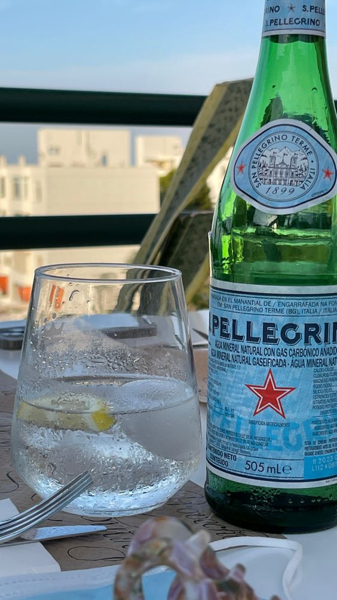

Water.
{kind=link}

CARBONATED WATER IS SUPERIOR.
Over the years, it has been shown that the co2 found in carbonated water is capable of lowering histamine, improving blood flow, and increasing cellular energy, all of which are things that in fact can alleviate nervousness and low mood. Natural spring water also tends to be high in magnesium which helps to increase GABA, the calming neurotransmitter. C02 has also been shown to increase stomach acid and speed up gastric emptying


You want naturally carbonated mineral water. If it doesn't say natural then it is synthetic carbonation. The reason we want it to be carbonated is because it passes the inspections without adding any chemicals. They add chemicals to all the other waters to lower the bacteria so it will pass the bacterial inspections. The carbonation is anti-bacterial naturally, but it won't affect the bacteria in our body so it is no concern for us to consume that.
There are local springs that may be good for you to access and there are websites that help you find them.
or you can get reverse osmosis water which you need to put electrolytes in because the osmosis filtration simple removes everything from the water.